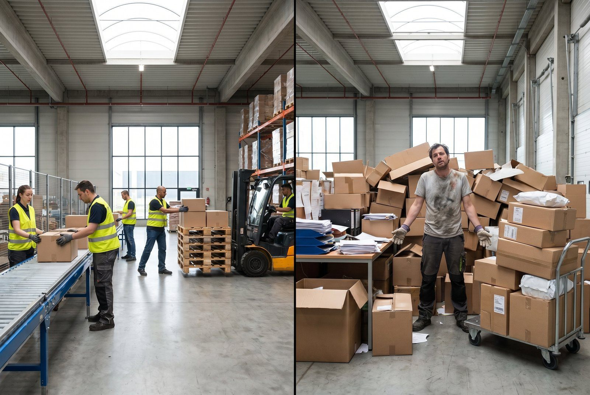

For mange eller for få medarbejdere er begge dyre fejl. For mange er spildte lønkroner. For få er forsinkede ordrer, stress og fejl. Den rigtige beregning kræver konkrete tal, ikke mavefølelse.
👉 Vil du gennemgå dit bemandingsbehov? Kontakt SmartPack
Grundberegningen: kapacitet per medarbejder
Start med at måle hvad en medarbejder faktisk kan håndtere. Tre nøgletal:
- Ordrer per medarbejder per dag (total arbejdsdag inkl. pakning og klargøring)
- Picks per time (kun plukningstid)
- Pakketid per ordre (i minutter)
Typiske benchmarks for en optimeret webshop med WMS:
- Ordrer per dag: 80-150 ved gennemsnitlig ordrekompleksitet
- Picks per time: 60-120 (single-item ordrer), 40-80 (multi-item)
- Pakketid: 2-5 min per ordre
Beregning: hvor mange behøver du?
Eksempel: 1.500 ordrer/md skal ekspederes på 22 arbejdsdage = 68 ordrer/dag. Med en kapacitet på 100 ordrer/medarbejder/dag behøver du 0,68 FTE. Det er realistisk med én deltidsstilling eller én fuldtidsmedarbejder der også håndterer ankomst og andre opgaver.
Ved 3.000 ordrer/md på 22 dage = 136 ordrer/dag. Det kræver 1,36 FTE. Det er to deltidsmedarbejdere eller én fuldtid + buffer.
Peak-faktor: glem ikke saesonudsving
Dimensioner du dit lager til gennemsnittet, er du underbemannet i peaks. Black Friday, jul, valentinsdag, o.lign. kan give 3-5x normal ordrebelastning i 1-2 uger. Din basisbemanding skal håndtere normal drift; din peak-strategi (vikar, deltid, overarbejde) skal håndtere resten.
Tommelfingerregel: basisbemanding bør kunne håndtere 1,5x din normale ordrebelastning før du skal bruge overarbejde.
Hvad koster en medarbejder reelt?
Mange undervurderer den reelle beskæftigelsesomkostning:
- Bruttoløn (typisk 25.000-32.000 kr./md for en lagermedarbejder)
- Overhead x 1,35 = 33.750-43.200 kr./md
- Udstyr og uniformer: 3.000-8.000 kr./år
- Onboarding (oplearing og produktivitetstab første 2-4 uger): 10.000-25.000 kr.
En fuldt operationel lagermedarbejder koster realistisk 350.000-450.000 kr./år alt inklusiv.
Hvornår er det billigere at optimere end at ansætte?
Spørg: kan dine eksisterende medarbejdere håndtere 10-20% mere med bedre processer? Hvis ja, er optimering (WMS, bedre plukruter, batch picking) sandsynligvis billigere end en ny medarbejder. Spar 350.000 kr. om året ved at bruge 50.000 kr. på systemoptimering. Det er en god investering.
Sådan understøtter SmartPack det
SmartPack måler ordrer per medarbejder per dag, picks per time og pakketid automatisk. Du får konkrete tal til at beregne kapacitetsbehov og til at argumentere for (eller imod) n&aeste; ansaættelse.